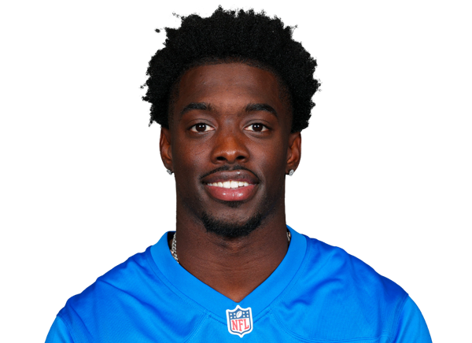

Detroit Lions cornerback Terrion Arnold, a first-round pick and one of the franchise's most important young defenders, stood before a Florida judge this week and was ordered held without bond on a stack of felony charges in a kidnapping and armed robbery case. It is one of the most serious off-field stories the NFL has faced this offseason, and it is a long, jarring fall for a 23-year-old who two years ago was being introduced as a building block in Detroit.
Before anything else, the most important sentence in this entire story: these are allegations, not proven facts. Arnold has not been convicted of anything. He has not stood trial. Prosecutors have laid out a theory of what they believe happened, and Arnold's legal team has flatly rejected it. What follows is what has actually been reported and confirmed, what prosecutors allege, and what is still unknown, kept carefully separate, because in a case this serious the distinction is the whole ballgame.
We do not handicap people's lives here, and this is not a betting story. It is a news story, and it deserves to be told straight.
The Charges and the Bond Ruling
Arnold turned himself in to authorities in Florida and made his first appearance before a Hillsborough County judge, where he faces eight felony counts: four counts of kidnapping and four counts of armed robbery. Under Florida law, those are first-degree felonies, and reporting across multiple national outlets has noted the charges carry the possibility of a life sentence if there were ever a conviction. Again, that is a maximum exposure, not a prediction and not a verdict.
At that first appearance, the judge ordered Arnold held without bond. He was not granted release. According to reports, the next step is a pretrial detention hearing scheduled for Monday, June 29, where a judge will weigh whether he stays in custody as the case proceeds. That hearing is the next real checkpoint, and it is the date to watch.
One detail from the courtroom drew a lot of attention online, and it is worth handling carefully rather than sensationally. Arnold appeared wearing a green anti-suicide garment, sometimes called a safety smock or "turtle suit." It is a heavy, tear-resistant garment that jails routinely issue to anyone placed on suicide watch as a standard precaution. Its presence is a custody and safety protocol. It is not a statement of guilt, and it is not evidence of anything related to the charges. It simply means the facility took a precaution, and it should be read as nothing more than that.
The Theory of the Case, Per Authorities
Here is where it has to be said clearly: everything in this section is what prosecutors and police allege. None of it has been proven in court. With that framing locked in, this is the narrative authorities have laid out.
According to reports, the case traces back to early February 2026. Investigators say Arnold reported that a large amount of personal property, valued in reports at well into six figures, was stolen from a short-term rental property he had been using in Florida. Prosecutors allege that in the hours and days after that theft, rather than letting a police investigation run its course, Arnold coordinated with several other people to track down the men he suspected were responsible.
Authorities allege that the group lured three men to an apartment under false pretenses, where associates were waiting and armed, and that the victims were robbed and held against their will. Prosecutors have described Arnold as the person who directed and orchestrated the plan, even as they have acknowledged elements of how the operation was allegedly coordinated remotely. Notably, reporting indicates investigators found no evidence actually linking the three targeted men to the original theft, which is part of why the case is being treated so seriously.
Multiple co-defendants have been charged in connection with the case, and reports indicate at least two of them have already entered guilty pleas. That is significant context, but it is also exactly where caution matters most: co-defendant pleas are not proof of Arnold's guilt, and his attorney has pointed directly at the credibility of the people cooperating with prosecutors.
A Flat Denial
Arnold's representation has not been quiet, and they have not hedged. In a statement, his attorney said that Arnold "categorically denies any involvement in the matters underlying the allegations made against him" and maintains his innocence. The defense has further argued that there is no credible evidence tying Arnold to the alleged crimes, and has characterized the state's case as leaning on the accounts of people who have admitted their own involvement.
That is the defense's position, and in a case where someone is presumed innocent unless and until proven guilty, it carries real weight. The state has a theory. The defense has a denial and a direct challenge to the reliability of the state's witnesses. Which one holds up is what the legal process exists to determine, and that process is just beginning.
The Lions, for their part, have publicly acknowledged the situation while declining to say much, citing respect for the ongoing legal process. The NFL has taken a similar posture. No discipline has been announced, and under the league's personal conduct policy, the NFL can conduct its own review independent of how the criminal case unfolds.
From Alabama Standout to First-Round Lion
For anyone who does not follow the Lions closely, here is why this lands so hard in Detroit. Terrion Arnold is not a fringe roster name. He was a genuine blue-chip prospect and a meaningful investment by a team that has been building a legitimate contender.
Arnold, born March 22, 2003, and a Tallahassee, Florida native, played his college football at Alabama. He was excellent there, earning first-team All-American and first-team All-SEC honors in 2023 as one of the most coveted cornerbacks in the country. He had the size, the ball skills, and the swagger that NFL teams chase at the position, and he carried himself like a player who expected to be a star.
The Lions clearly believed it. Detroit traded up in the first round of the 2024 NFL Draft to select Arnold 24th overall, signing him to a four-year rookie contract worth roughly $14.3 million with a signing bonus of about $7.25 million. That is the kind of capital, both in draft picks and dollars, that a franchise only spends on a player it expects to anchor the secondary for years.
Talented, Invested In, But Not Yet a Finished Star
On the field, Arnold's two seasons have shown flashes of the prospect Detroit fell in love with, along with the normal bumps of a young corner learning the league and some injury luck that cut into his development. As a rookie in 2024, he played 16 games with 15 starts and recorded 60 tackles and 10 passes defensed. In 2025 his season was shortened, as he played eight games before a shoulder injury landed him on injured reserve, ending his year early; he finished with 31 tackles, his first career interception, and eight more passes defensed.
Add it up and the picture is clear: a talented, athletic young cornerback that the Lions invested real resources in, who flashed starter-level ability but had not yet locked down a true shutdown-corner reputation. He was trending toward an important role on a team with championship aspirations. He was not, yet, an established Pro Bowl-level star. That is the honest read on where he stood as a player before any of this surfaced.
Which is exactly why this story is such a gut punch in Detroit. The Lions were not just losing depth. They were watching a player they bet on, a player who was supposed to be part of the answer, suddenly become the center of a criminal case that could define the rest of his life.
A Major Off-Field Story With No Easy Resolution
Make no mistake, this is a major story, not a one-day headline. For the Lions, it creates immediate uncertainty at a position where they had been counting on Arnold to contribute. There is the football question of how the secondary is built without knowing his availability. There is the business question of a guaranteed rookie contract and the salary-cap mechanics that come with any roster decision. And there is the human question that sits underneath all of it, because a 23-year-old is facing charges that could carry a life sentence.
For the NFL, it is another test of how the league handles serious off-field allegations while a legal process plays out, before any court has reached a verdict. The personal conduct policy gives the league room to act, but the smart and fair move in a case this serious is to let the facts develop rather than to race ahead of them.
From a fan's and a reader's standpoint, the only responsible way to follow this is to keep the line bright between what is alleged and what is proven. Prosecutors have a serious theory. Arnold has issued a flat denial. He is presumed innocent. The next concrete date is the June 29 pretrial detention hearing, and we will update this story as verified developments come in. Until then, anything beyond the confirmed facts is speculation, and a story this heavy deserves better than that.